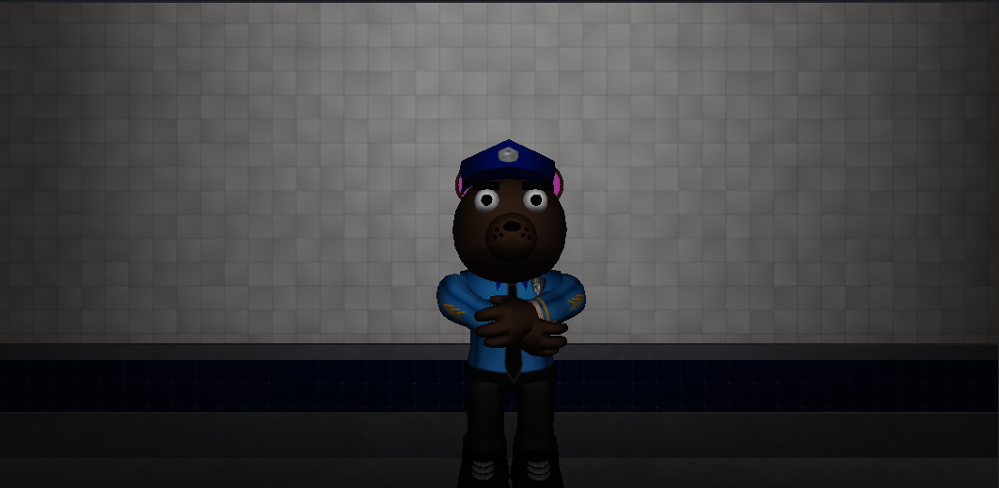

Made by: Carolline Summer
Enterprise Account Rogers ProfileAbout 2 weeks ago, a SnowVille's nuclear power plant worker, called Samantha, Has made a call to 911 to report sereval missings cases about other workers of the same nuclear power plant. The police has closed the place for invesgation for 2 weeks, but they didn't found a single thing.
Photo of SnowVille's nuclear power plant.
Samantha in a statement says, that: "Each person has went missing in different days, like one day they were at work, talking with their friends and doing their job, and in the other they simply just dissapear with no traces.", and in other statement she says that every person, in the day before they went missing, they needed to stay until late in the nuclear power plant.
Samantha, the person who reported the missings.
Roger's, one of the heads behind the nuclear power plant, has sayed: "We know about all of these missings, and we are working together with the police to find out were they are, and if there are guiltys behind this, arrest them. We cannot go any further since this is an active investigation."
Daniel Miller, the sheriff of the investigation, has made a statement about Roger's answer: "They are helping a lot with the invesgation, but we should take more careful steps when walking with they, when we always make questions about their relation with the missing ones, they are always vague, also they has acting strange when we entered some specific parts of the place."

Daniel Miller, the sheriff of the invesgation.